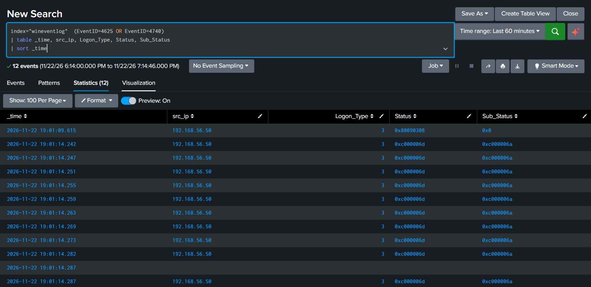
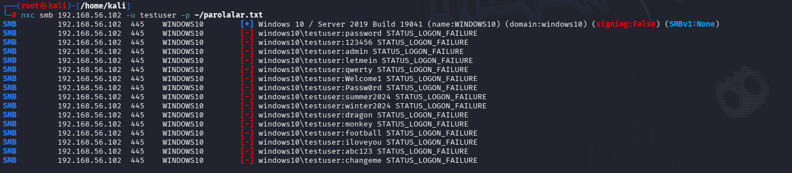

05 · Brute force over SMB
Many failed network/RDP logons from a single source IP in a short time (4625, Logon Type 3 and 10).
Attack
# Kali (192.168.56.50) → Windows VM (192.168.56.102), host-only network only
nxc smb 192.168.56.102 -u testuser -p ~/parolalar.txtDetection (SPL)
Detection and alert query
index=wineventlog EventID=4625 Logon_Type IN (3,10)
| stats count by src_ip
| where count > 9Scheduled alert
| Setting | Value |
|---|---|
| Type | Scheduled, cron */5 * * * * |
| Time range | Last 5 minutes |
| Trigger | Number of Results > 0, Once |
| Action | Add to Triggered Alerts, Severity High |
False positives and tuning
Before the attack I looked at the last 7 days: there were only 2 events with 4625, both my own logons at the screen (Logon Type 2). The error code said the password had expired. Windows had indeed asked me to change my password that day. There were no failed logons over the network at all. Since the rule only looks at Logon Type 3 (network) and 10 (RDP), these two are out of scope anyway. One of the events in the attack trail wasn't a password attempt either; it was netexec's own handshake.
There's also a possible false positive in a real environment: a service still running with an old password can keep producing 4625 from a single source. I had seen an example like this in the BOTS v2 data: 85 attempts from 10.0.1.220 against the Administrator account, with no successful logon.
Fixes
Hydra's SMB module couldn't talk to newer SMB versions, so I ran the attack with netexec. The account was locked out after 10 attempts. I ran the repeat tests with a non-existent account (testuser) that can't be locked.
I first set up the alert to run every minute and look at the last 1 minute, and it didn't trigger. When I ran the query myself it returned results, so the problem wasn't the query. Thinking about how long logs take to reach Splunk, I realized 1 minute wasn't enough, and I raised both the schedule and the window to 5 minutes. The alert triggered on the next attack.
I chose a threshold of 10, because a normal user who forgets their password tries 5-6 times at most, and Windows also set its lockout threshold to 10. This has a cost: on a machine with a lower lockout threshold, the account gets locked before reaching 10 and the rule can miss the attack. A slow attack spread across the 5-minute window can also stay below the threshold.
Screenshots



testuser: the account doesn't lock, but it still produces 4625.
192.168.56.50, 27 failed logons.
Test evidence
| Test | Time (VM clock) | Result |
|---|---|---|
| Attack 1 | 2026-11-22 19:01 | 11× 4625 + 1× 4740; account locked |
| Manual detection query | 2026-11-22 19:52 | 192.168.56.50, count 27 |
| Repeat attack + alert | 2026-11-22 20:00 | Alert triggered (Triggered Alerts, High) |
Lesson learned
I was glad to see that Windows has a lockout threshold like this, because it makes the attack a lot harder. But the lockout only protects the account. It doesn't block the attacker's IP, and the attacker can keep trying other accounts. Windows has its own defenses against attacks too, and I need to write my detections with them in mind. That's also why I based my threshold on the lockout threshold.
Full details (data sources, limitations, analyst next steps; in Turkish): detections/05-kaba-kuvvet-smb.md